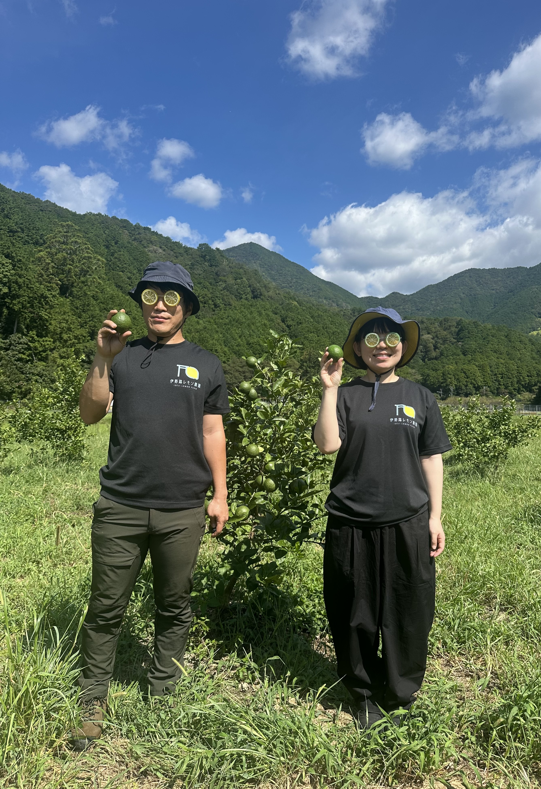
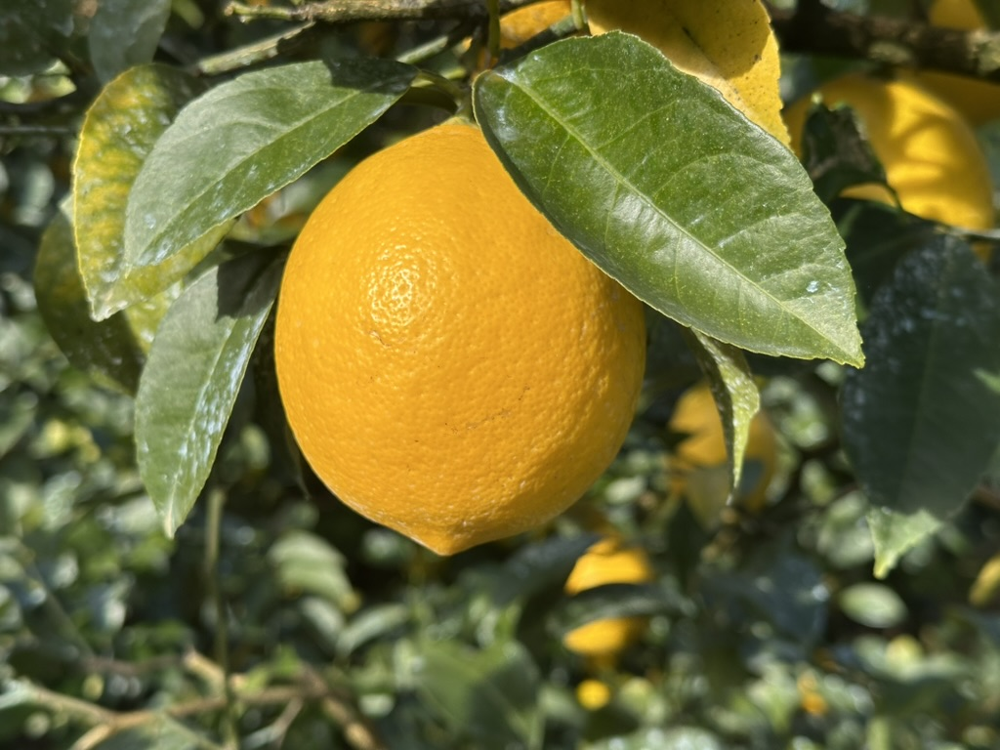
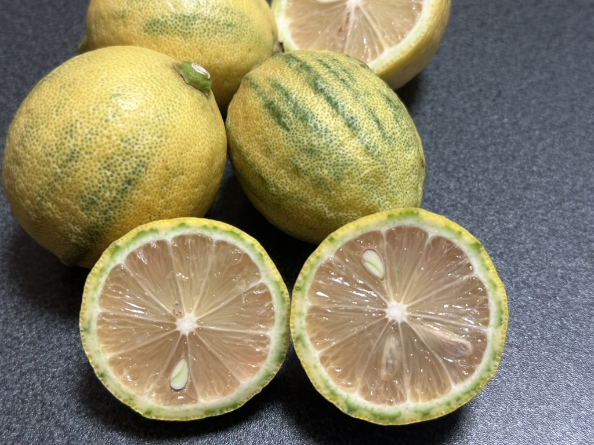
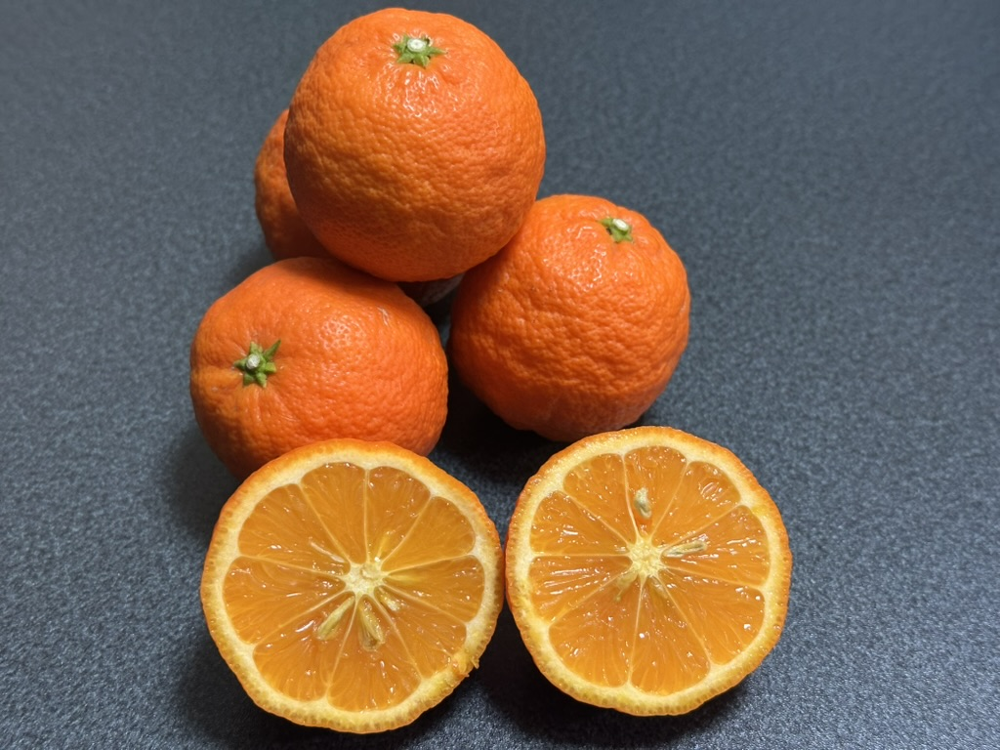

農園について
ABOUT
伊勢から熊野を結ぶ世界遺産熊野古道「伊勢路」の地でレモン作ってます🍋
【生産者】
伊勢路レモン農園 氏原 翔平
三重県紀北町出身
ホテル勤務8年→フリーランス＆レモン農家へ
「地元で軸になる仕事をしたい」「レモンで地域を盛り上げたい」
そして何より、食べ物の中で一番レモンが好き！
酸っぱくて思わず顔がすぼんでしまう、いつのまにか笑顔がこぼれるようなレモンを作っています。
伊勢路レモン農園では、三重県の温暖な気候と豊かな自然環境を活かしてレモンを育てています。
一つ一つ丁寧に手作業で収穫し、新鮮さにこだわって皆様にお届けします。

商品紹介

【マイヤーレモン】
レモンとオレンジの自然交配でできたれくてかわいい形のレモン。甘みのある果汁はそのままでもおいしく食べられて、お料理からスイーツまで幅広く使える優れモノ！

【ピンクレモネード】
果肉はピンク色で、果皮には緑色のストライプ模様が現れる？個性的なレモン。しっかりした酸味がうれしい。

【姫レモン】
サイズがすだち程の小さなレモン。山椒のような独特の香りで、カクテル、日本食やエスニック料理などにぴったり。
レモンの効能いろいろ
🍋免疫力向上🍋
感染症予防のためのβ-クリプトキサンチンとビタミンCが豊富
🍋疲労回復🍋
レモン果汁には疲労回復効果の高いクエン酸が含まれます
🍋美肌効果🍋
ビタミンやポスフェノールで、みずみずしく透明感のあるお肌に
その他にも......
むくみ解消、骨粗鬆症予防、高血圧対策、動脈硬化予防、腸内環境改善、デトックス効果、貧血予防、口臭予防、リラックス効果、若さを保つ効果なども期待できると言われています
レモンの保存方法
◾️冷蔵保存◾️ 期間約1ヶ月
まるごと1個をそのままラップ or 新聞紙で包み、ジッパー付き保存袋へ入れる
◾️冷凍保存◾️ 期間約2ヶ月
まるごと、くし切り、輪切り、ざく切りなど使いやすい形にしてラップで包み、ジッパー付き保存袋へ入れる
安心安全の減農薬
伊勢路レモン農園ではワックスや防腐剤を使用しておりません。
どなたでも安心して皮までおいしくお召し上がりいただけます。
お問い合わせ
ご質問やお問い合わせがございましたら、お気軽にご連絡ください。
伊勢路レモン農園
住所: 三重県紀北町
メール: iseji.lemon.farm@gmail.com